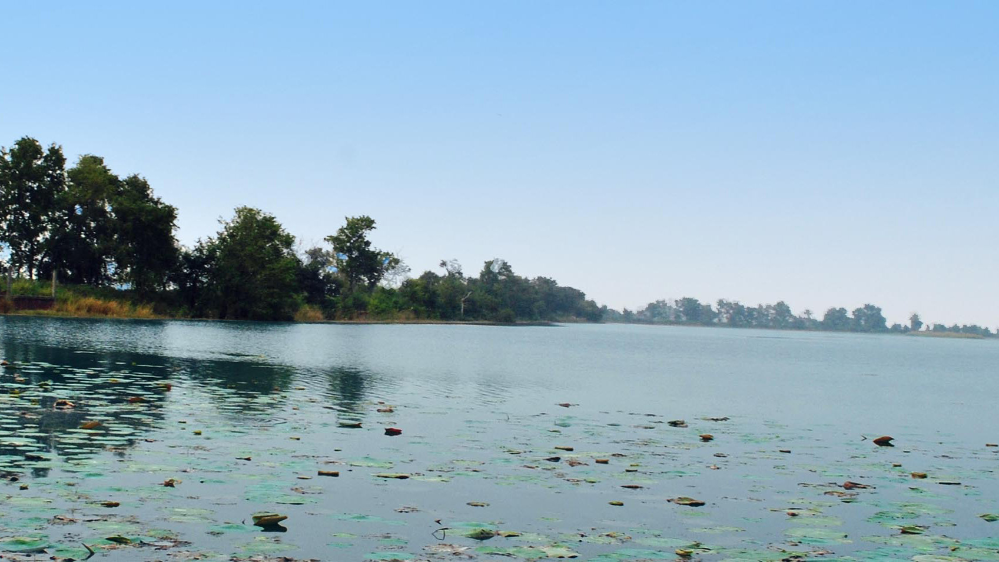
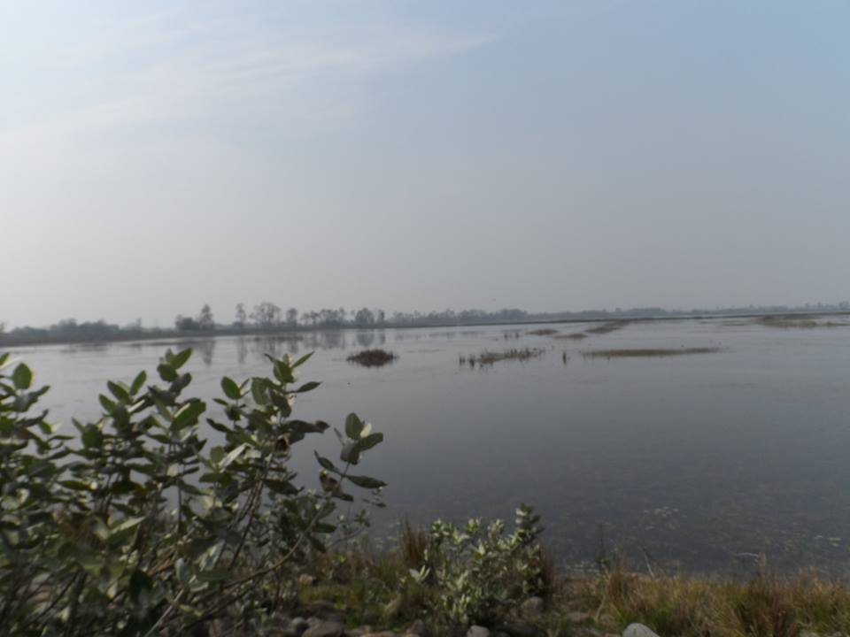
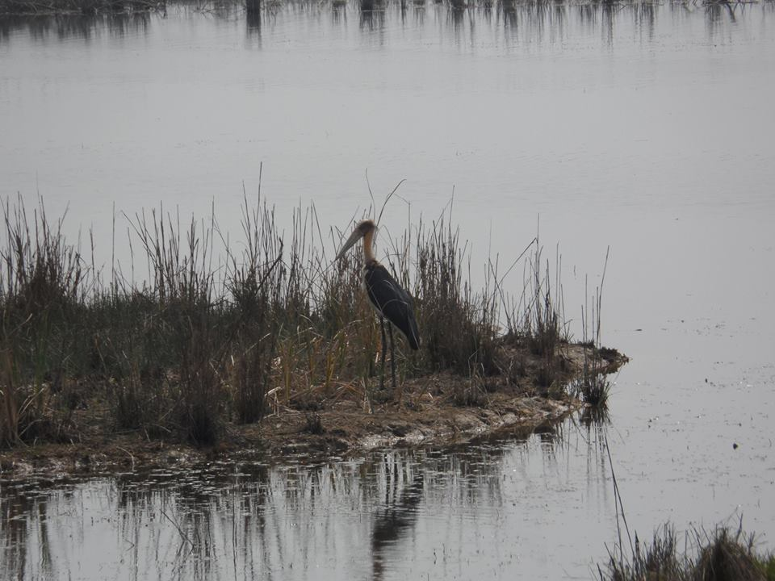
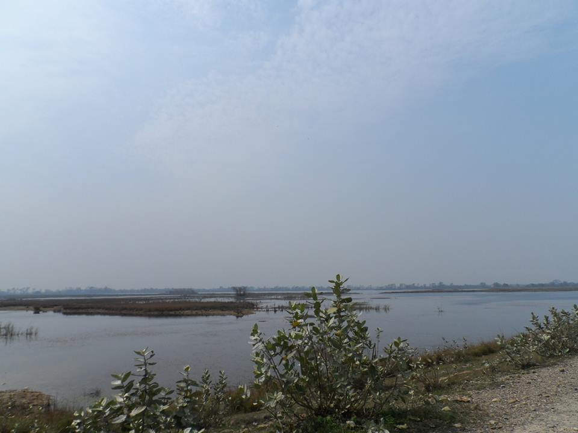
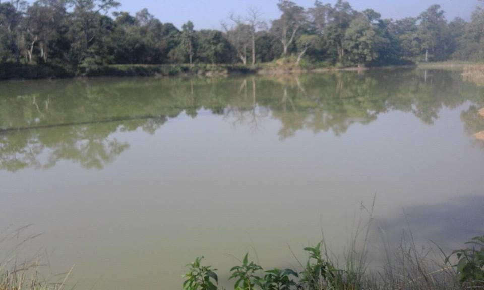

हाम्रो कपिलवस्तु
कपिलवस्तु जिल्ला नेपालकै एक प्राकृितक स्राेत र साधनले भिरपूर्ण भएकाे कारण अत्यान्तै सुन्दर रहेकाे छ ।
यस जिल्लामा जगदिशपुर ताल, सगरहवा ताल, विजुवा, कोपवा, बुड्ढी, हरिहरपुर ताल, कर्मा ताल, रामलक्ष्मण ताल रनगार्इ, पुरैनी ताल आदि रहेका छन् ।
जगदीशपुर (जखिरा) ताल :
करीव १५७ हेक्टर क्षेत्रफलमा फैलिएको यो तालमा विभिन्न प्रजातिका माछाहरु पाउनुको साथै विभिन्न प्रजातिका चराहरुको बासिस्थान रहेको छ । चालिस बर्ष अघि सम्म यहाँ मानिसको बसोबास थियो । अहिले पानी नै पानी भएको यो ठाउँमा जगिरा नामको सानो ताल थियो । त्यही जगिरा तालमा मानिसहरु माछा मार्थे, पौडि खेल्थे । कपिलवस्तुको निग्लिहवामा रहेको यो मानव निर्मित तालको १५७ हेक्टर पानीले भरिएको छ । यो पानी बाणगंगा नदीबाट सिंचाइका लागि ल्याइएको हो । लक्षणघाटमा बाँध बाँधेर ल्याएको पानी यहाँको बस्ती उठाएर जमाइयो । जगिरा ताल भएको ठाउँमा सिंचाइका लागि ल्याएको पानी जमाएपछि जगदिशपुर ताल भन्न थालियो । यो नेपालकै ठूलो मानव निर्मित ताल बन्यो ।




रामलक्ष्मण ताल :
